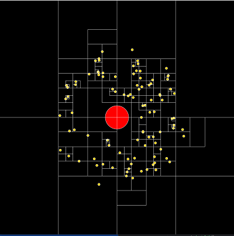

Barnes Hut Algorithm to Simulate Galaxies
The Barnes-Hut algorithm is a O(nlogn) algorithm that is a major improvement from the very slow O(n^2) brute force algorithm. The brute force algorithm becomes problematic when n (number of bodies) is set to more than ~1000. The gravitational force an object exerts on another object becomes very, very small when their distances are far apart, so the key idea of the Barnes-Hut Algorithm is to basically group objects that are far apart together using their center of masses, and treat them as if they are just a single object. There are basically two parts of this algorithm. The first is to initialize the quad tree that we are using based on the locations of the bodies.

The root of the quad tree represents the universe, and every quadrant can be recursively divided into fourths until every object has a corresponding quadrant to itself. The external nodes of the quadtree (leaves) store either nothing or a single body. The internal nodes store the aggregate center of mass and the total mass of all objects underneath them.
After creating the tree, now it is time to calculate the forces on every single object. We traverse through the nodes recursively starting from the root. We now need to check if the node is far enough from the current body, and we use the quotient s / d where s is the width of the current quadrant and d is the distance from the body and the node's center of mass. We can arbitrarily pick a value θ such that θ > 0 to check if s / d is less than θ. When θ is closer to 0, it becomes more accurate but slower because we are approximating less, and when θ is further away, it speeds up the simulation but we lose accuracy. When θ is 0 it simply just becomes the naive implementation that runs in O(n^2) time. If the node is far enough away from the current body, we can easily just treat it like a single object. If it is not, then we must recursively repeat by traversing through every subtree.
Shown above is ~40k stars orbiting around a blackhole. It runs pretty well, while my computer freezes at around a thousand stars when using a brute force approach. The power of algorithms! Possible ideas include creating galaxy collisions, solar systems, stars of different masses and sizes, etc, but I'm pretty happy with the current project. Also, it should be noted that implementing a 3D n body simulation is very easy, simply turn the quadtree into an octree and recursively divide every quadrant into eighths instead of fourths. I implemented my own 3D simulation but I found it to be not as visually pleasing as a 2 dimensional approach.